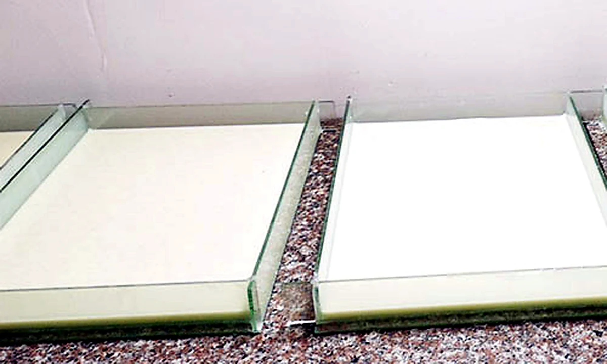
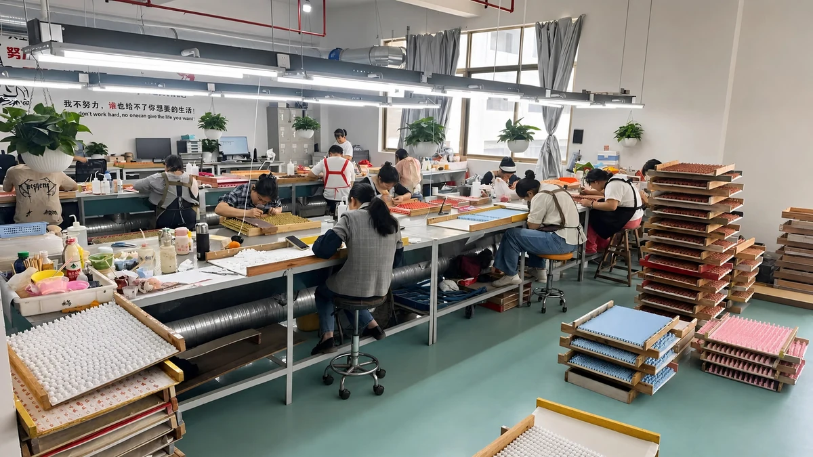
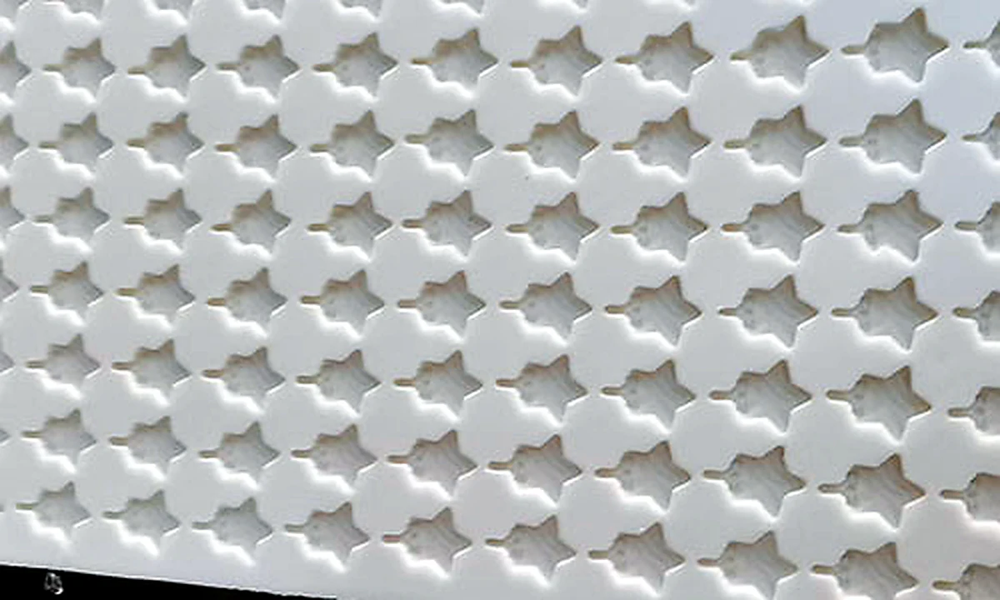
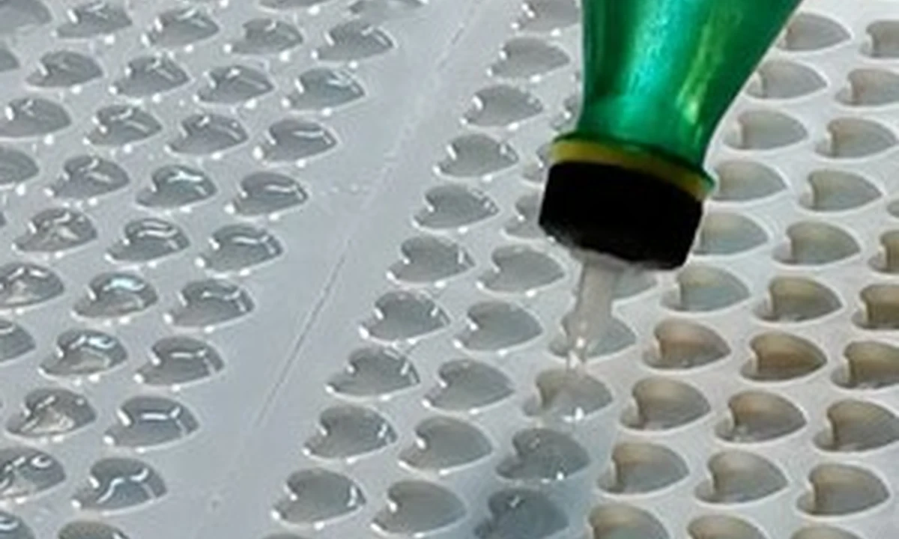
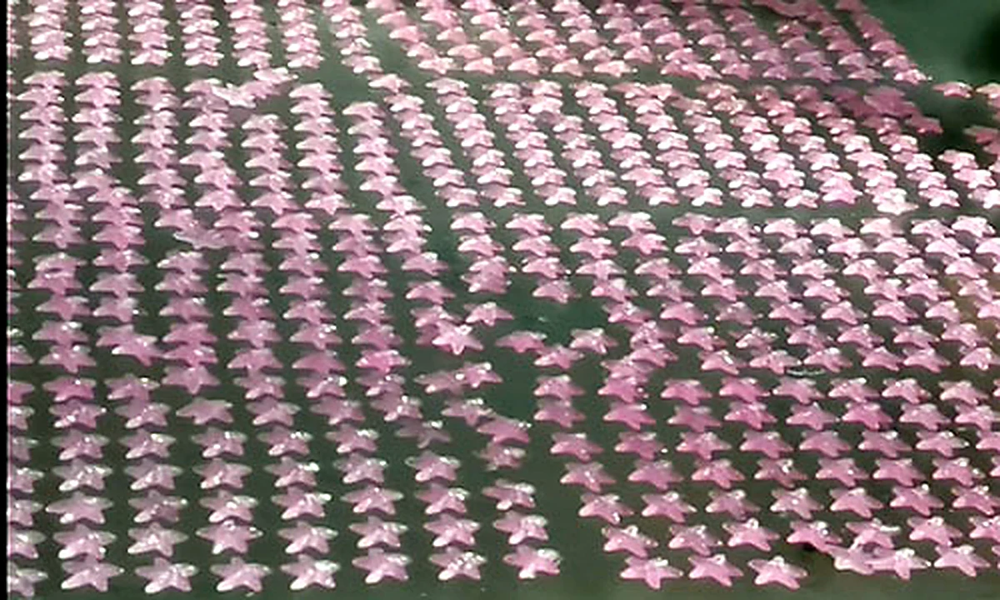
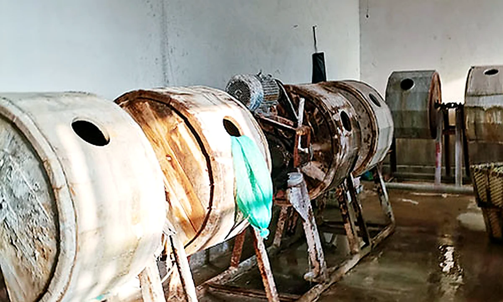
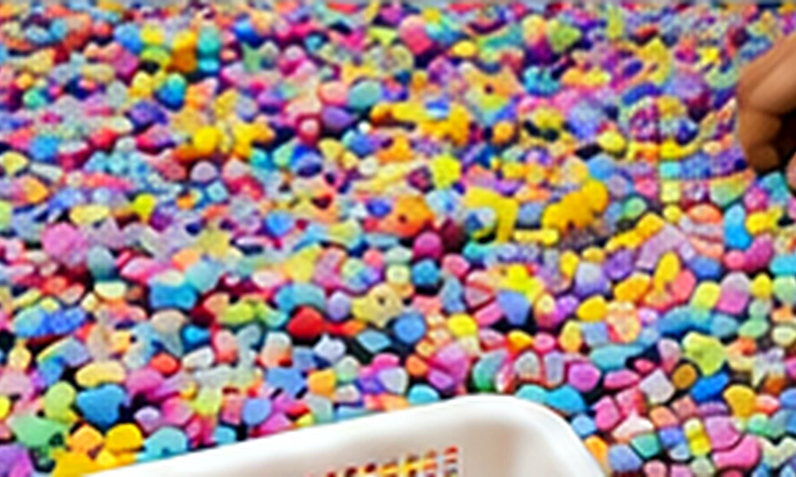
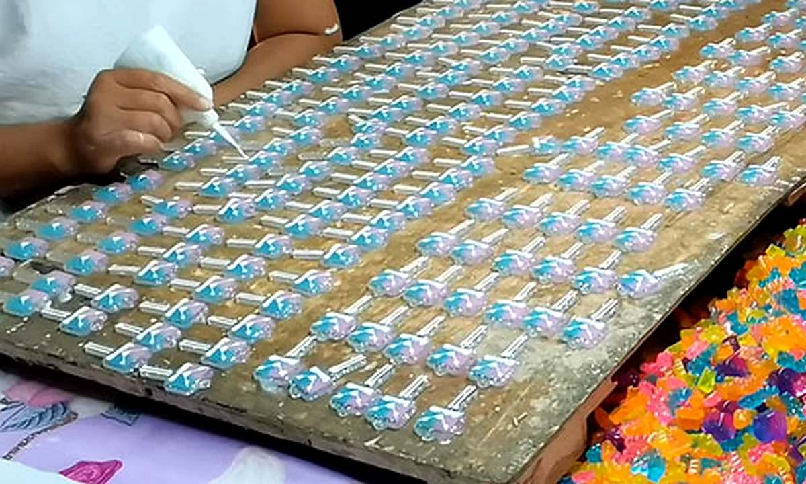
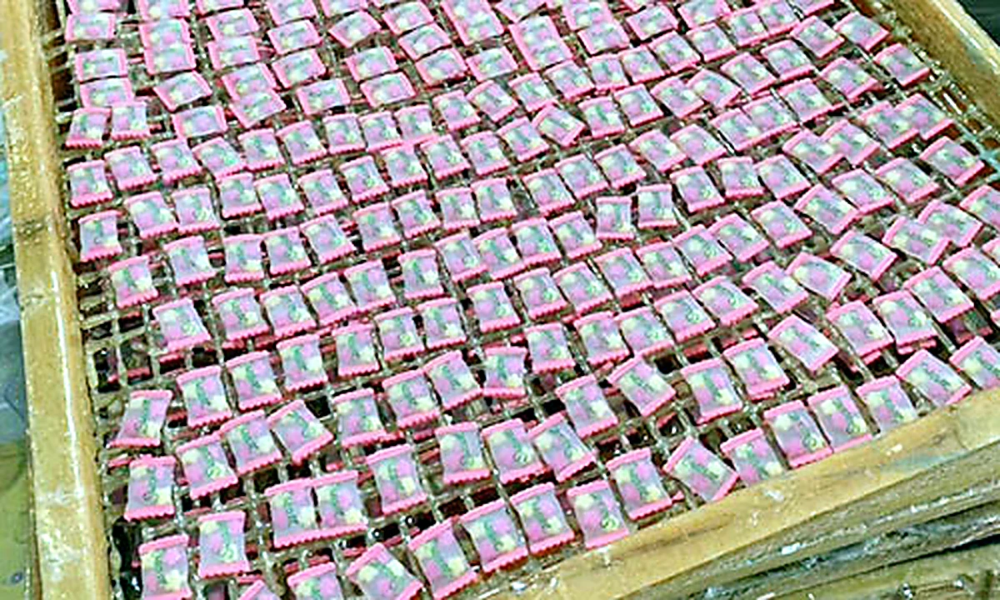
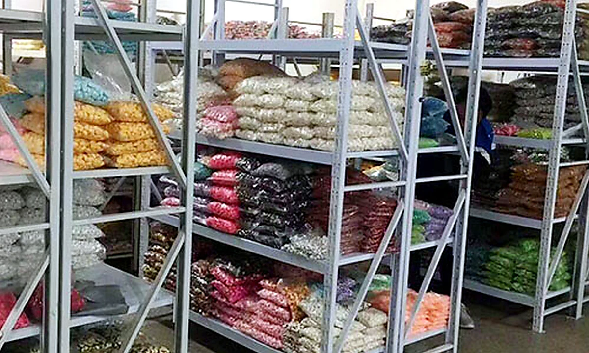

01Make Mold
Create precise molds to keep product shape, dimensions and production consistency under control.
For small craft accessories, consistent sorting, packing accuracy and export carton control are as important as product variety.

Watch a concise overview of Qula Craft's production equipment, hand-finishing process, product assortment and organized stock for custom wholesale programs.
Precision craftsmanship, strict quality control and a clear 9-step workflow from mold preparation to final warehouse inspection.

01Create precise molds to keep product shape, dimensions and production consistency under control.

02Thoroughly clean each cavity before production to reduce residue and keep the finished surface smooth.

03Carefully fill the prepared mold cavities to maintain stable shape, thickness and batch consistency.

04Allow the formed pieces to dry and stabilize under suitable conditions before secondary processing.

05Polish the surface to improve smoothness, remove rough edges and create a more consistent finish.

06Hand-pick and sort pieces by color, shape and visible quality before finishing and packing.

07Apply the required paint or UV coating to achieve the target color, gloss and surface appearance.

08Cure the finished pieces to improve coating stability, durability and color consistency.

09Complete final inspection, organized storage and packing preparation before order shipment.
Color, count, size and packing method are locked in writing before production starts — that is what keeps reorders identical.
The photos below are our Yiwu workshop as it runs day to day: weighing and hand-packing benches, automated bagging lines, curing ovens, sorting tables and the stock wall.
View Quality & Safety